cuda编程入门
资料:
《GPU高性能编程CUDA实战》
GPU架构
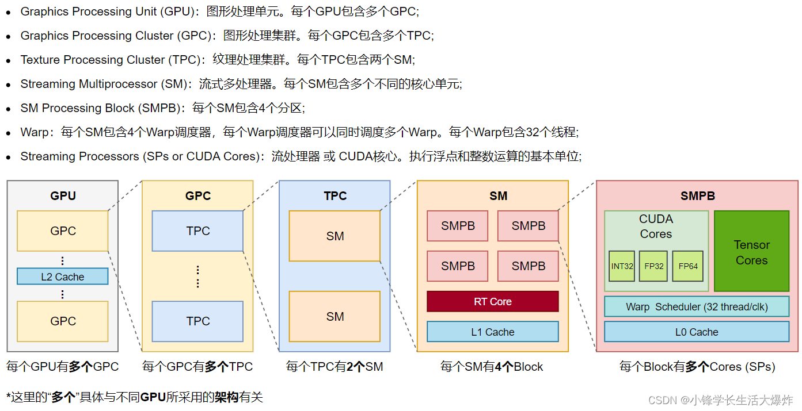
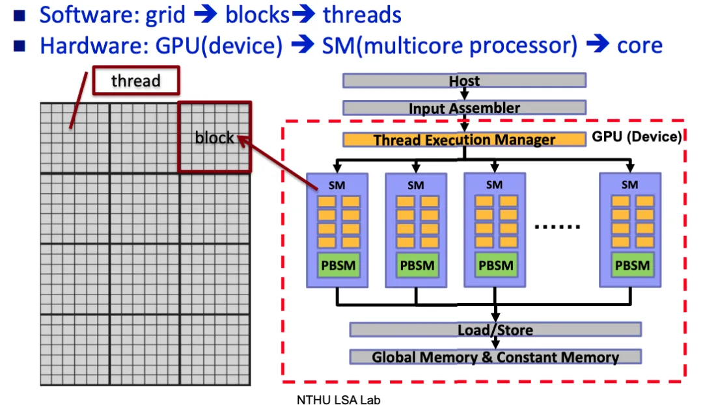
nvidia-smi指令
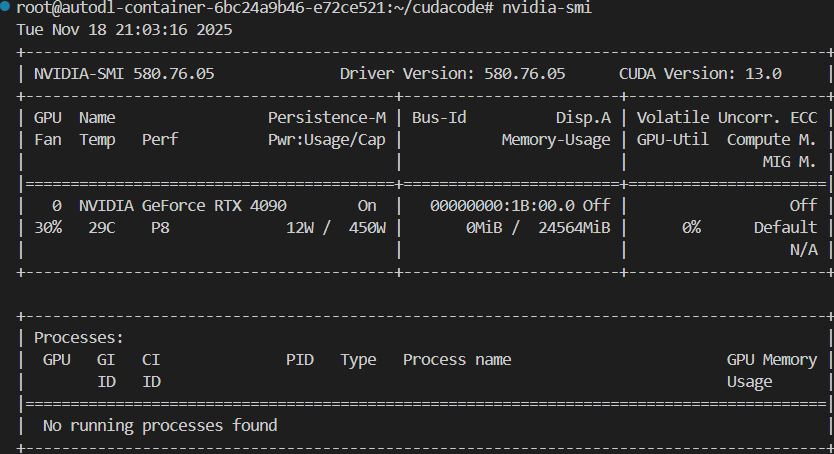
更多的命令问ai吧~
从cpp到cuda编程
一般的程序:
1 | //hello.cpp |
1 | g++ hello.cpp -o hello |
nvcc:
- 安装cuda即可使用nvcc
- nvcc支持纯c++代码编译
- 编译扩展名为.cu的cuda文件
1 | nvcc hello.cu -o hello |
1 | //hello.cu |
1 | root@autodl-container-6bc24a9b46-e72ce521:~/cudacode/2.1lesson# nvcc hello.cu -o hellocu |
核函数
核函数 是在GPU上并行执行的函数。它是CUDA编程模型的核心，允许你将计算任务分解成成千上万个并行线程，从而利用GPU的大规模并行计算能力。
- 执行位置：在GPU上并行执行,具有异步性。
- 并行方式：通过大量线程以“单指令多线程”的模式并行执行。
- 调用方式：由CPU（主机）调用，但运行在GPU（设备）上。
- 返回类型：必须返回
void。 - 只能访问GPU内存
- 不行使用变长参数 静态变量 函数指针
- 不支持c++的iostream
定义
使用 __global__ 关键字来声明一个函数为核函数。
1 | // 使用 __global__ 关键字定义核函数 |
执行空间说明符:
__global__：在GPU上执行，由CPU调用。这是我们定义核函数时使用的。__device__：在GPU上执行，由GPU调用（通常是从其他__device__函数或核函数中调用）。__host__：在CPU上执行，由CPU调用（就是普通的C++函数）。可以同时使用__host__ __device__，使得该函数既能被CPU调用，也能被GPU编译。
cuda程序编写流程:
1 | int main(void) |
调用
调用核函数时，需要使用特殊的尖括号语法 <<< ... >>> 来指定执行配置，即如何组织线程来执行这个核函数。
1 |
|
线程 线程块 网格
- 线程：最基本的执行单元。
- 线程块：一组线程的集合。
- 一个块内的线程可以：
- 通过共享内存高效地交换数据。
- 使用
__syncthreads()函数进行同步。
- 线程块之间是相互独立的。它们可以以任何顺序、在任何SM（流多处理器） 上执行。
- 一个线程块的执行不应依赖于另一个线程块的结果。这是CUDA编程模型的一个基本假设。
- 一个块内的线程可以：
- 网格：所有线程块的集合。一个核函数启动的所有线程块构成一个网格。
CUDA线程模型
线程模型结构
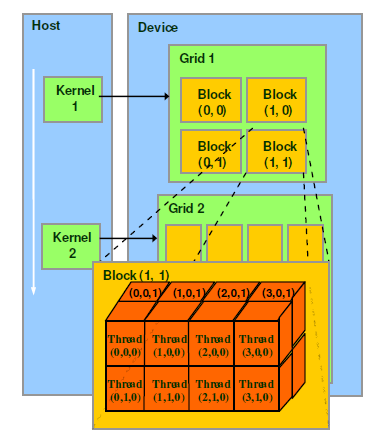
CUDA线程模型是一个分层的并行编程模型，它将并行任务分解为多个层次，从粗粒度到细粒度依次是：
网格(grid) → 线程块(block) → 线程束 → 线程
线程:最基本的执行单元
- 每个线程是独立的执行路径
- 执行相同的核函数代码，但处理不同的数据
- 有自己的程序计数器、寄存器组和本地内存
线程块:协作的线程组
- 共享内存：块内所有线程共享一块快速片上内存
- 同步能力：通过
__syncthreads()实现块内线程同步 - 独立性：不同线程块之间相互独立，可以乱序执行
- 维度：可以是1D、2D或3D布局
网格: 完整的执行单元
- 包含所有执行同一核函数的线程块
- 当核函数启动时，就定义了一个网格
- 网格中的线程块被调度到不同的SM上执行
注意:
- 线程分块是逻辑划分,物理上线程不分块
- 配置线程: <<<网格大小,线程块大小>>>
- 最大允许线程块大小1024
- 最大允许网格大小$2^{32}-1$(针对一维网格)
1 |
|
1 | root@autodl-container-6bc24a9b46-e72ce521:~/cudacode/2.3lesson# nvcc ex1.cu -o ex1 |
一维线程模型
- 每个线程在
核函数中都有一个唯一的身份标识 - 每个线程的唯一标识由<<<grid_size,block_size>>>确定,grid_size,block_size保存在内建变量(build-in variable) 目前考虑的是一维情况
- gridDim.x : 该数值等于执行配置中变量grid_size的值
- blockDim.x : 该数值等于执行配置中变量block_size的值
- 线程索引保存为内建变量
- blockIdx.x : 该变量指定一个线程在一个网格中的线程块索引值,范围为0~gridDim.x-1
- threadIdx.x : 该变量指定一个线程在一个线程块中的线程索引值,范围为0~blockDim.x-1
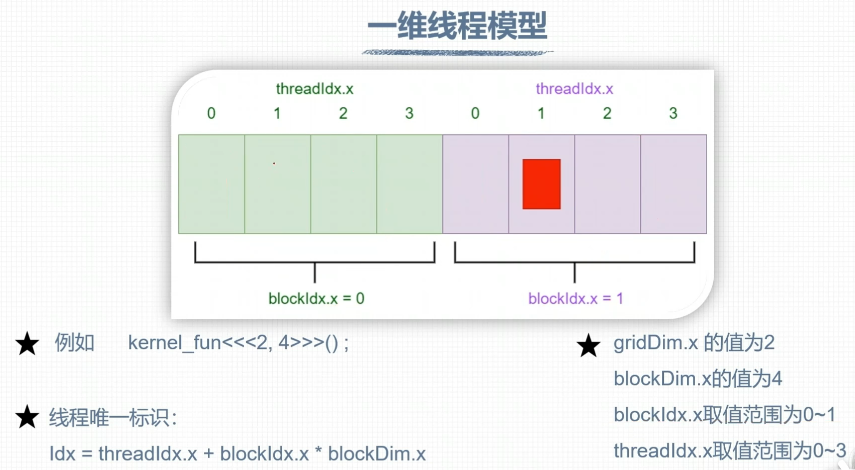
1 | // 一维网格和块 计算线程索引 |
1 |
|
1 | root@autodl-container-6bc24a9b46-e72ce521:~/cudacode/2.3lesson# nvcc ex1.cu -o ex1 |
多维线程
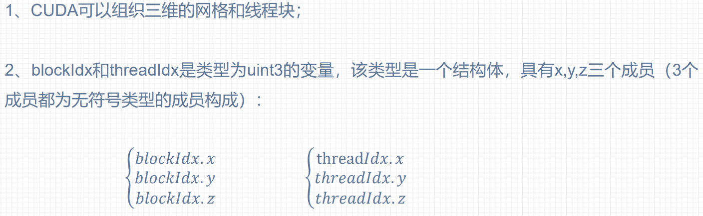
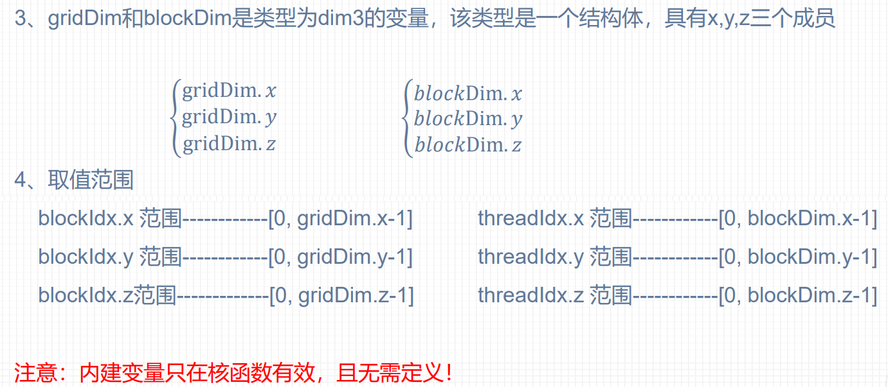
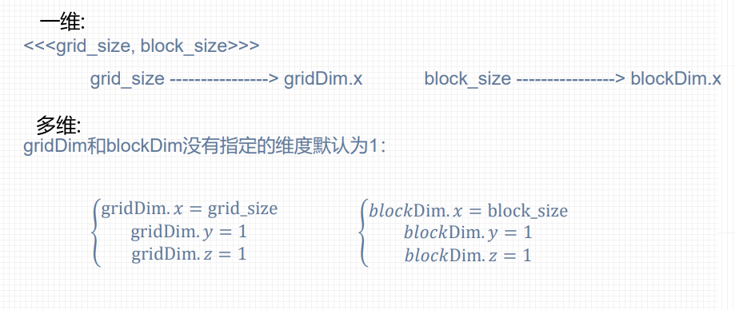
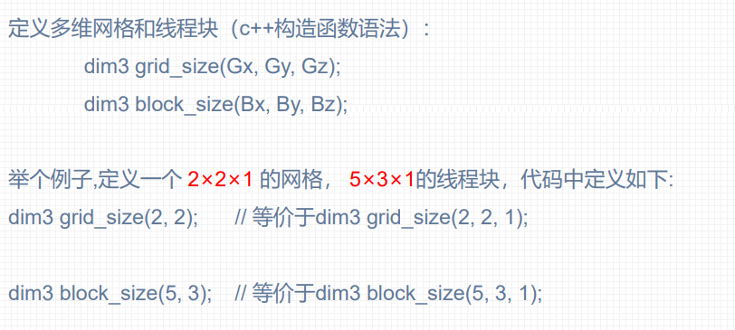
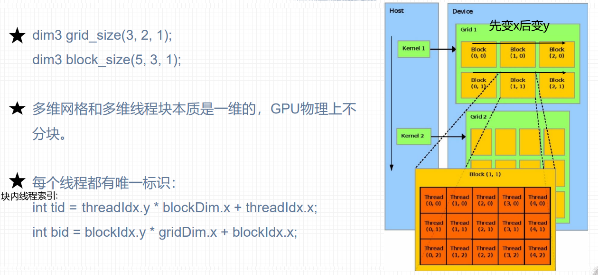
网格和线程块的限制条件:
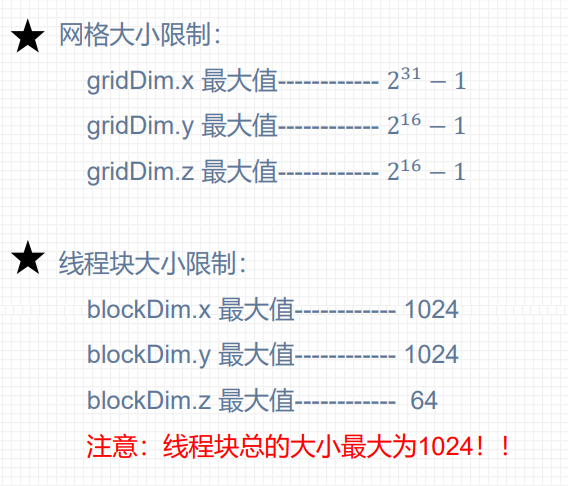
线程全局索引计算方式
线程全局索引
一维网格 一维线程块:
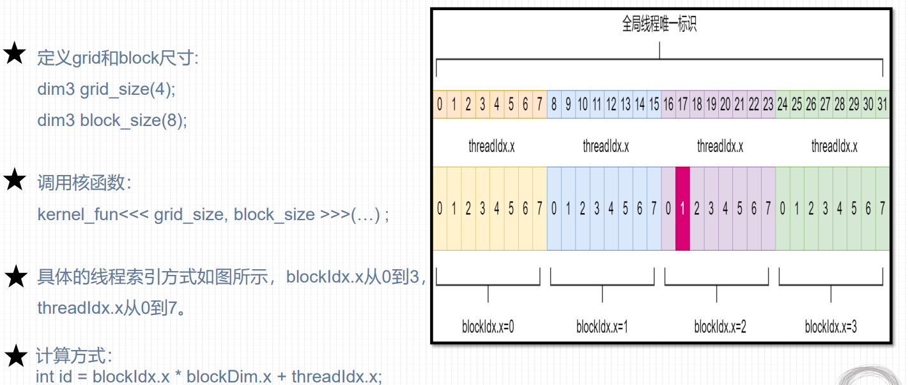
二维网格 二维线程块:
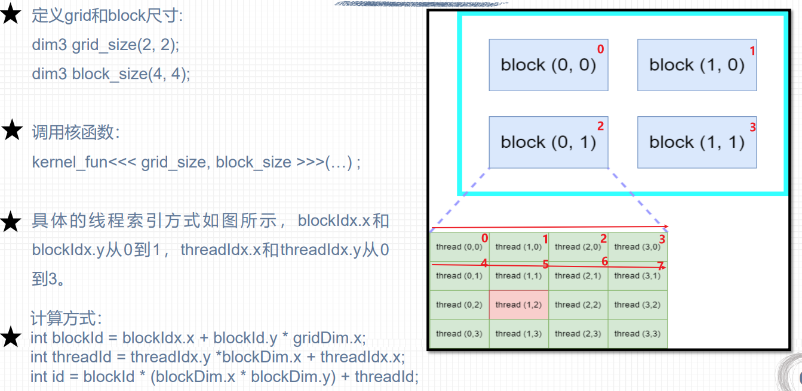
三维网格 三维线程块:
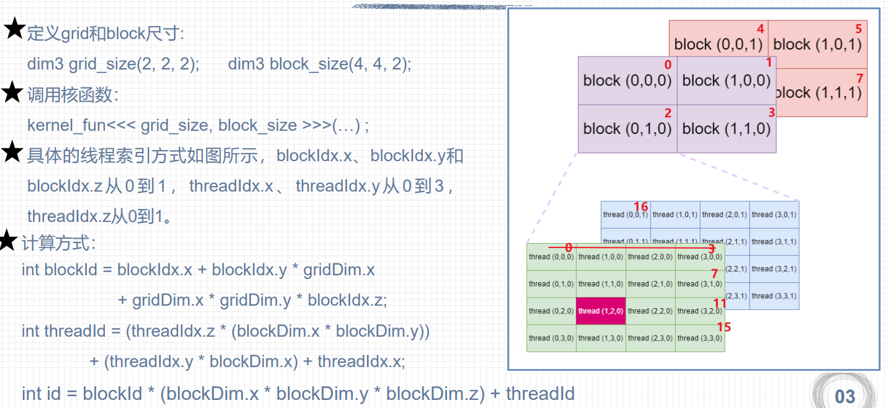
*NVCC编译流程和GPU计算能力
NVCC编译流程
NVCC（NVIDIA CUDA Compiler）的编译流程分为多个阶段，主要处理主机端（Host，CPU）代码和设备端（Device，GPU）代码的混合编译。
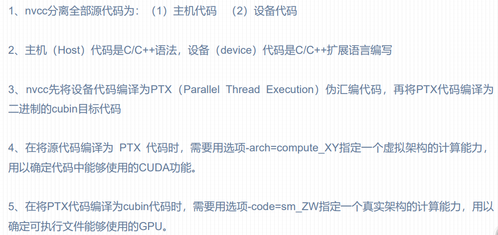
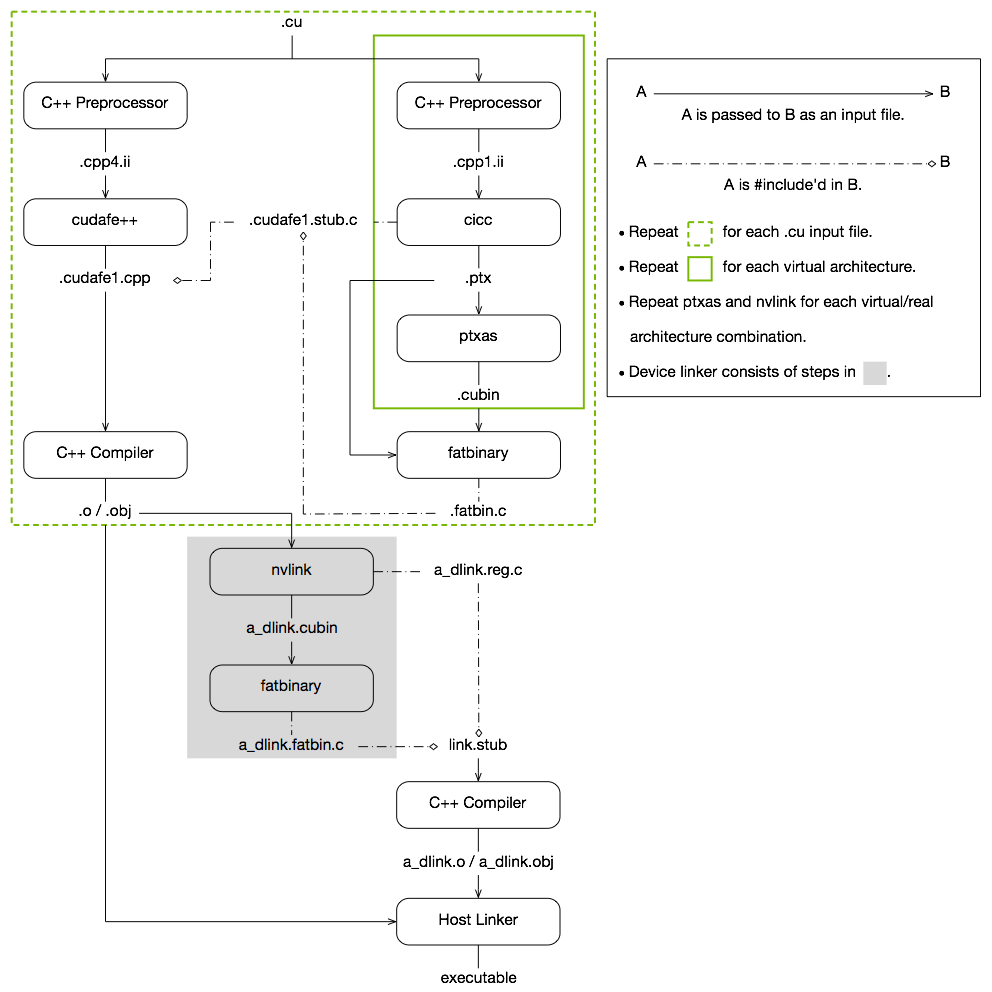
PTX
PTX（Parallel Thread Execution）是CUDA平台为基于 GPU的通用计算而定义的虚拟机和指令集
- 虚拟指令集：不直接对应具体GPU硬件，而是抽象中间表示
- 跨架构兼容：可在不同代际的NVIDIA GPU上运行
1 | CUDA源码 (.cu) |
- nvcc编译命令总是使用两个体系结构:一个是虚拟的中间体系结构，另一个是实际的GPU体系结构
- 虚拟架构更像是对应用所需的GPU功能的声明
- 虚拟架构应该尽可能选择低----适配更多实际GPU
- 真实架构应该尽可能选择高----充分发挥GPU性能
- 虚拟架构应低于真实架构
GPU架构和计算能力
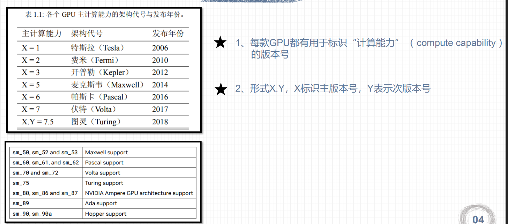
并非GPU 的计算能力越高，性能就越高
CUDA程序兼容性问题
虚拟架构计算能力
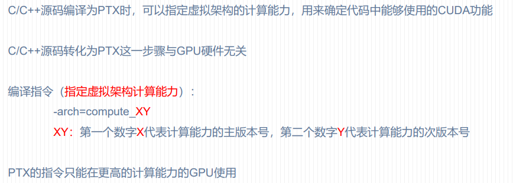
1 | nvcc helloworld.cu –o helloworld -arch=compute_61 |
真实架构计算能力
1 | nvcc helloworld.cu –o helloworld -arch=compute_61 -code=sm_60 |
多个GPU版本编译
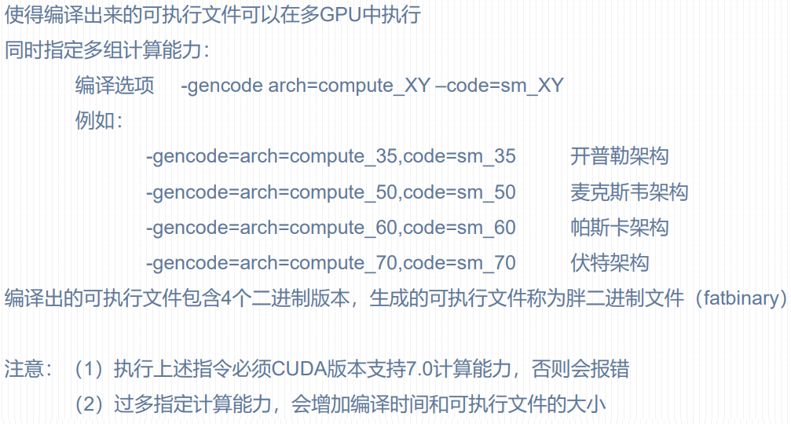
NVCC即时编译
-
在运行可执行文件时，从保留的PTX代码临时编译出cubin文件
-
在可执行文件中保留PTX代码，nvcc编译指令指定所保留的PTX代码虚拟架构:
1
2
3-gencode arch=compute_XY ,code=compute_XY
#两个计算能力都是虚拟架构计算能力
#两个虚拟架构计算能力必须一致
NVCC编译默认计算能力
不同版本CUDA编译器在编译CUDA代码时，都有一个默认计算能力
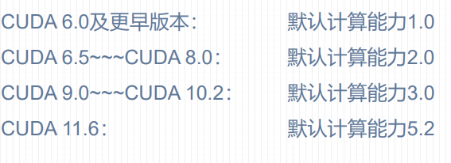
CUDA程序基本框架
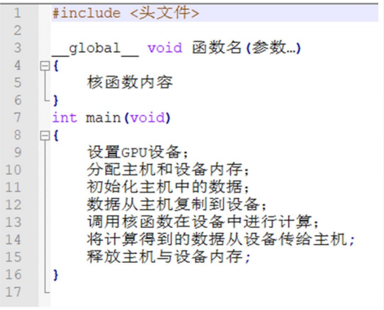
GPU设备管理
cudaGetDeviceCount()
获取GPU数量
1 | __host__ cudaError_t cudaGetDeviceCount(int *count); |
- 参数：
count是一个指向int的指针，用于接收可用 CUDA 设备的数量。 - 返回值：返回
cudaError_t类型的错误码，cudaSuccess表示成功，否则表示错误。
cudaSetDevice()
设置当前线程使用的设备。
1 | __host__ cudaError_t cudaSetDevice(int device); |
- 返回值：
cudaError_t类型，cudaSuccess表示成功，其他值表示错误（如cudaErrorInvalidDevice表示设备索引无效）。 - 参数：
device是目标设备的序号（从 0 开始）
1 |
|
cudaDeviceProp结构体
它是一个在
cuda_runtime_api.h中定义的结构体。你的程序不需要手动创建和填充它的每个字段，而是通过调用一个专门的函数cudaGetDeviceProperties()，让 CUDA 驱动自动帮你填充好当前 GPU 的所有信息
1 | struct cudaDeviceProp { |
| 类别 | 属性名 | 类型 | 说明 |
|---|---|---|---|
| 基础标识 | name |
char[256] |
设备名称（如 “NVIDIA GeForce RTX 3090”） |
major, minor |
int |
计算能力版本，例如 8.6。决定了硬件特性集 | |
totalGlobalMem |
size_t |
全局内存（显存）总容量（字节） | |
multiProcessorCount |
int |
流多处理器（SM）的数量，是并行度的基础 | |
clockRate |
int |
GPU核心时钟频率（kHz） | |
| 线程组织 | maxThreadsPerBlock |
int |
每个线程块允许的最大线程数（通常为1024） |
maxThreadsDim[3] |
int[3] |
线程块在各维度上的最大尺寸（如 1024×1024×64） | |
maxGridSize[3] |
int[3] |
网格在各维度上的最大尺寸（如 2³¹-1） | |
warpSize |
int |
线程束大小（固定为32） | |
maxThreadsPerMultiProcessor |
int |
每个SM上最大可驻留的线程总数（如 1536 或 2048） | |
| 内存资源 | sharedMemPerBlock |
size_t |
每个线程块可用的最大共享内存（字节） |
sharedMemPerMultiprocessor |
size_t |
每个SM可用的共享内存总量（字节） | |
regsPerBlock |
int |
每个线程块可用的32位寄存器数 | |
regsPerMultiprocessor |
int |
每个SM可用的32位寄存器总数 | |
totalConstMem |
size_t |
常量内存总量（64 KB） | |
l2CacheSize |
int |
L2缓存大小（字节） | |
| 特性支持 | concurrentKernels |
int |
是否支持多个核函数同时执行（非零表示支持） |
unifiedAddressing |
int |
是否支持统一地址空间（主机与设备指针相同） | |
managedMemory |
int |
是否支持托管内存（Unified Memory） | |
concurrentManagedAccess |
int |
是否支持CPU和GPU同时访问托管内存 | |
canMapHostMemory |
int |
是否支持映射主机内存（零拷贝） | |
cooperativeLaunch |
int |
是否支持协作启动（cudaLaunchCooperativeKernel） |
|
hostNativeAtomicSupported |
int |
主机是否支持64位原子操作 | |
computePreemptionSupported |
int |
是否支持GPU任务抢占 | |
ECCEnabled |
int |
是否启用ECC（错误校正码，主要见于Tesla系列） | |
| 性能优化 | memoryClockRate |
int |
显存时钟频率（kHz） |
memoryBusWidth |
int |
显存总线位宽（位），影响带宽 | |
singleToDoublePrecisionPerfRatio |
int |
单精度与双精度浮点性能比（1表示性能相同） | |
asyncEngineCount |
int |
异步复制引擎数量（用于并发数据传输） | |
| 设备类型 | integrated |
int |
是否为集成GPU（如 Tegra） |
tccDriver |
int |
是否使用TCC驱动（仅Tesla，不支持图形） | |
kernelExecTimeoutEnabled |
int |
内核是否受看门狗时间限制（显示卡为1） |
cudaGetDeviceProperties()
1 | __host__ cudaError_t cudaGetDeviceProperties(cudaDeviceProp *prop, int device); |
prop：指向cudaDeviceProp结构体的指针，函数执行后会将设备属性填入此结构体。device：要查询的设备序号，从0开始，最大为cudaGetDeviceCount() - 1。- 返回值：
cudaSuccess表示成功，否则返回相应的错误码（如cudaErrorInvalidDevice表示设备索引无效）。 cudaDeviceGetAttribute(int *value, cudaDeviceAttr attr, int device)：当只需要查询单个属性时，使用此函数更高效，因为它只填充一个值，避免复制整个cudaDeviceProp结构体。
1 |
|
cudaChooseDevice()
根据指定的属性条件，自动选择最匹配的 CUDA 设备
1 | __host__ cudaError_t cudaChooseDevice(int *device, const cudaDeviceProp *prop); |
device：输出参数，指向一个整数的指针，函数执行后会将选中的设备索引号存入其中。prop：输入参数，指向一个cudaDeviceProp结构体的指针，表示期望的设备属性条件。- 返回值：
cudaError_t类型，cudaSuccess表示成功，否则返回相应的错误码。 cudaChooseDevice会在系统中所有可用的 CUDA 设备中进行搜索，返回与prop中指定的属性最匹配的设备- 由于其匹配算法不透明，在需要精确控制的场景下，自行实现设备筛选逻辑是更可靠的选择。
1 |
|
内存管理
CUDA通过内存分配 数据传递 内存初始化 内存释放进行内存管理
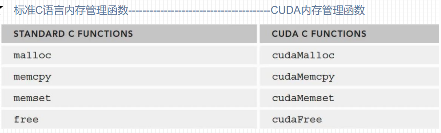
内存分配
1 | __host__ __device__ cudaError_t cudaMalloc(void** devPtr, size_t size); |
devPtr: 指向设备内存指针的指针。函数会将分配的设备内存地址存储在这个指针中。size: 要分配的内存大小（以字节为单位）。- 返回
cudaError_t类型值，表示函数执行的状态。如果成功，返回cudaSuccess - 可以将
cudaMalloc()分配的指针传递给在设备上执行的函数。 - 可以在设备代码中使用
cudaMalloc()分配的指针进行内存读写操作。 - 可以将
cudaMalloc()分配的指针传递给在主机上执行的函数。 - 不能在主机代码中使用
cudaMalloc()分配的指针进行内存读写操作。 - 上述限制对于主机指针有相似的条件:主机指针只能访问主机代码中的内存, 而设备指针也只能访问设备代码中的内存。但是主机可以通过调用
cudaMemcpy来访问设备上的内存
使用 cudaMalloc 分配的内存必须使用cudaFree来释放。
数据拷贝
cudaMemcpy 用于在主机内存和设备内存之间复制数据。
1 | __host__ cudaError_t cudaMemcpy(void* dst, const void* src, size_t count, cudaMemcpyKind kind) |
dst: 目标内存地址src: 源内存地址count: 要复制的字节数kind: 复制方向，指定数据是从主机到设备，还是从设备到主机等。这是一个枚举类型，主要取值有：cudaMemcpyHostToHost： 主机 → 主机cudaMemcpyHostToDevice： 主机 → 设备cudaMemcpyDeviceToHost： 设备 → 主机cudaMemcpyDeviceToDevice： 设备 → 设备cudaMemcpyDefault： 根据指针地址自动判断方向（默认方式只允许在支持统一虚拟寻址的系统上使用）
内存初始化
cudaMemset 用于设置设备内存的值，功能类似于标准 C 的 memset 函数。
1 | __host__ cudaError_t cudaMemset(void* devPtr, int value, size_t count) |
devPtr: 指向设备内存的指针value: 要设置的值（以字节为单位设置）count: 要设置的字节数
cudaMemset 是按字节操作的，这与标准 memset 一致。这对于初始化 char 数组或清零内存非常有用，但对于设置非字节类型的特定值（如将所有 int 设置为 1）则不方便。
内存释放
cudaFree 用于释放由 cudaMalloc、cudaMallocManaged 等函数分配的设备内存。
1 | __host__ __device__ cudaError_t cudaFree(void* devPtr) |
-
devPtr: 指向要释放的设备内存的指针 -
只能释放由 CUDA 内存分配函数分配的内存。
-
试图释放无效的指针或已经释放的指针会导致未定义行为（通常是运行时错误）。
-
在主机程序退出前释放所有分配的设备内存是一个好习惯，但现代 CUDA 驱动在程序结束时也会自动清理。
1 |
|
自定义CUDA函数
设备函数（device function）
- 定义只能执行在GPU设备上的函数为设备函数
- 设备函数只能被核函数或其他设备函数调用
- 设备函数用device修饰
核函数（kernel function）
- 用global修饰的函数称为核函数，一般由主机调用，在设备中执行
- global 修饰符既不能和host同时使用，也不可与device 同时使用
主机函数（host function）
- 主机端的普通 C++ 函数可用 host 修饰
- 对于主机端的函数， __host__修饰符可省略
- 可以用 host 和 device 同时修饰一个函数减少冗余代码。编译器会针对主机 和设备分别编译该函数。
Example：一维矩阵加法
1 |
|
Tips:
-
上述代码人为设置一个线程可以负责一个数据,但当数据个数由512变化为513时,
dim3 grid(iElemCount/32);就无法保证一个线程负责一个数据,因此要改为dim3 grid((iElemCount + block.x - 1) / 32);,即向上取整,此时线程个数会多于矩阵元素个数,因此在GPU上的运算函数要附加if条件。 -
上述核函数可以拆分为核函数调用设备函数的形式
-
结合上述两条,修改后的代码如下:
1
2
3
4
5
6
7
8
9
10
11
12
13
14
15
16
17
18
19
20
21
22
23
24
25
26
27
28
29
30
31
32
33
34
35
36
37
38
39
40
41
42
43
44
45
46
47
48
49
50
51
52
53
54
55
56
57
58
59
60
61
62
63
64
65
66
67
68
69
70
71
72
73
74
75
76
77
78
79
80
81
82
83
84
85
86
87
88
89
90
91
92
93
94
95
96
97
98
99
100
101
102
103
104
105
106
107
108
109
110
111
112
113
114
115
116
117
118
119
120
121
122
123
124
125
126
127
128
129
130
131
132
133
134
135
__device__ float add(const float x,const float y)
{
return x+y;
}
__global__ void addFromGPU(float *A ,float *B ,float *C,const int N)
{
const int bid = blockIdx.x;
const int tid = threadIdx.x;
const int id = tid+bid*blockDim.x;
if(id>=N) return ;
C[id]=add(A[id],B[id]);
}
void initialData(float *addr,int elemCount)
{
for(int i=0;i<elemCount;i++)
{
addr[i]=(float)(rand()& 0xff) / 10.f;
}
return ;
}
void setGPU()
{
//1.检查计算机GPU的数量
int iDeviceCount=0;
cudaError_t error = cudaGetDeviceCount(&iDeviceCount);
if(error!= cudaSuccess || iDeviceCount ==0)
{
printf("NO CUDA campatable GPU found\n");
exit(-1);
}
else
{
printf("The count of GPUs is %d \n",iDeviceCount);
}
//2.设置执行
int iDev = 0;
error = cudaSetDevice(iDev);
if(error!=cudaSuccess)
{
printf("fail to set GPU 0 for computing.\n");
exit(-1);
}
else
{
printf("set GPU 0 for computing.\n");
}
}
int main()
{
// 1.设置GPU设备
setGPU();
//2.分配主机内存和设备内存,并初始化
int iElemCount = 513; //一个矩阵的元素数目
size_t stBytesCount = iElemCount * sizeof(float); //字节数
//(1)分配主机内存并初始化
float *fpHost_A,*fpHost_B,*fpHost_C;
fpHost_A = (float*) malloc(stBytesCount);
fpHost_B = (float*) malloc(stBytesCount);
fpHost_C = (float*) malloc(stBytesCount);
if(fpHost_A!=NULL&&fpHost_B!=NULL&&fpHost_C!=NULL)
{
//主机内存初始化为0
memset(fpHost_A,0,stBytesCount);
memset(fpHost_B,0,stBytesCount);
memset(fpHost_C,0,stBytesCount);
}
else
{
printf("Fail to allocate host memory!\n");
exit(-1);
}
// (2)分配设备内存 并初始化
float *fpDevice_A,*fpDevice_B,*fpDevice_C;
cudaMalloc((float**)&fpDevice_A,stBytesCount);
cudaMalloc((float**)&fpDevice_B,stBytesCount);
cudaMalloc((float**)&fpDevice_C,stBytesCount);
if (fpDevice_A != NULL && fpDevice_B != NULL && fpDevice_C != NULL)
{
cudaMemset(fpDevice_A,0,stBytesCount);
cudaMemset(fpDevice_B,0,stBytesCount);
cudaMemset(fpDevice_C,0,stBytesCount);
}else
{
printf("fail to allocate memory\n");
free(fpHost_A);
free(fpHost_B);
free(fpHost_C);
exit(-1);
}
//3.初始化主机中的数据
srand(666);
initialData(fpHost_A,iElemCount);
initialData(fpHost_B,iElemCount);
//4.从主机复制数据到设备
cudaMemcpy(fpDevice_A,fpHost_A,stBytesCount,cudaMemcpyHostToDevice);
cudaMemcpy(fpDevice_B,fpHost_B,stBytesCount,cudaMemcpyHostToDevice);
cudaMemcpy(fpDevice_C,fpHost_C,stBytesCount,cudaMemcpyHostToDevice);
//5.调用核函数在设备上计算
dim3 block(32);
dim3 grid((iElemCount-1+block.x)/block.x);//保证每个线程负责一个数据
addFromGPU<<<grid,block>>>(fpDevice_A,fpDevice_B,fpDevice_C,iElemCount);
//6.将计算得到的数据从设备传给主机
cudaMemcpy(fpHost_C,fpDevice_C,stBytesCount,cudaMemcpyDeviceToHost);//隐式保证GPU执行完之后再执行
for(int i = 0;i<10;i++)
{
printf("idx=%2d\tmatrix_A:%.2f\tmatrix_B:%.2f\tresult=%.2f\n", i+1, fpHost_A[i], fpHost_B[i], fpHost_C[i]);
}
//7.释放主机与设备内存
free(fpHost_A);
free(fpHost_B);
free(fpHost_C);
cudaFree(fpDevice_A);
cudaFree(fpDevice_B);
cudaFree(fpDevice_C);
cudaDeviceReset();
return 0;
}
Example：矢量求和
为什么要线程块分解为线程呢?
并行线程块
1 | //并行线程块 |
1 | 0: is running |
并行线程
1 | //并行线程块 |
仅仅是更改了两行代码:
add<<<1,N>>>(dev_a,dev_b,dev_c);int idx = threadIdx.x;
线程块并行和线程并行
对于N = 10的矢量求和我们可以任意选择并行粒度，但是当N特别大的时候，我们不得不考虑硬件对线程块以及线程的限制。
**硬件将线程块的数量限制在65535之内，线程块内的最大线程数量不能超过设备属性结构的maxThreadPerBlock的值（大部分设备的值为512），**因此我们必须将线程并行和线程块并行结合起来。
而这里面的关键就在于：核函数中的索引计算方式和核函数的调用方式（线程块大小和网格大小）
假设我们的线程块内线程数量最多为128，而我们要处理的向量长度为N
如果长度N仍在最大线程数之内，我们想要启动N个线程,很自然我们会设置核函数为<<< (N+127)/128 , 128 >>> , (N+127)/128是为了向上取整 , 否则当N = 127的时候会开出0个线程块
1 | add<<< (N+127)/128 , 128>>>(dev_a,dev_b,dev_c); |
那如果N超过了最大线程数之内呢,比如$N>65535*128$ , 如果依旧按照上面的写法 , 核函数会调用失败 , 此时我们就要修改核函数的运行方式
1 | __global__ void add(int* a,int* b,int*c) |
完整代码:
1 | //并行线程块 |
到目前为止,将线程块分解的原因仅仅是因为硬件的限制,但是还有其他原因。
CUDA内存模型
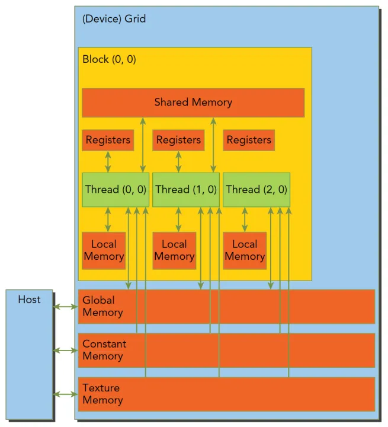
内存层次结构概览
从硬件角度看，CUDA 内存分为片上内存和片外内存：
- 片上内存（SRAM 高带宽、低延迟）：寄存器、共享内存、L1/L2 缓存。
- 片外内存（DRAM 容量大、延迟高）：全局内存、本地内存、常量内存、纹理内存。
从软件视角，CUDA 将内存划分为以下类型（按访问速度从快到慢排列）：
| 内存类型 | 物理位置 | 作用域 | 生命周期 | 访问特性 |
|---|---|---|---|---|
| 寄存器 | 片上 | 线程私有 | 线程执行期间 | 最快，无延迟，无冲突 |
| 共享内存 | 片上 | 线程块内所有线程 | 线程块执行期间 | 快，可编程缓存，有 bank 冲突 |
| L2 缓存 | 片上 | 所有线程 | 全局 | 自动缓存全局/本地/常量/纹理访问 |
| 本地内存 | 片外（显存） | 线程私有 | 线程执行期间 | 慢，但编译器自动管理 |
| 常量内存 | 片外（但被 L1/L2 缓存） | 所有线程 | 全局 | 只读，广播机制，延迟低 |
| 纹理内存 | 片外（但被 L1/L2 缓存） | 所有线程 | 全局 | 只读，硬件滤波，地址对齐 |
| 全局内存 | 片外（显存） | 所有线程 | 全局 | 容量大，延迟高，需合并访问 |
*注：常量内存是片外存储，但通过片上专用常量缓存进行加速，该缓存具有广播能力，未命中时才经过 L2 缓存。
各类内存详细介绍
寄存器 (Registers)
- 特性：每个线程私有的最快存储单元，数量有限（每个线程最多 255 个 32 位寄存器，取决于架构和编译选项）。
- 生命周期：仅在当前线程执行期间有效。
- 使用：局部变量（如
int x;）默认分配在寄存器中，除非编译器因寄存器溢出而将其放入本地内存。 - 性能：零额外延迟，无 bank 冲突。但过多寄存器使用会降低线程占用率。
本地内存 (Local Memory)
- 特性：逻辑上属于线程私有，但物理上存储在显存（全局内存）中。当编译器判断寄存器不足或变量为数组、结构体等无法完全放入寄存器时，会分配本地内存。
- 生命周期：线程执行期间。
- 性能：访问速度与全局内存相当（慢），但通常被 L1/L2 缓存部分缓解。应尽量避免大数组或过多变量导致的本地内存使用。
共享内存 (Shared Memory)
- 特性：片上 SRAM，同一线程块内所有线程共享，极低延迟（~20-30 周期），高带宽。由程序员显式管理。
- 生命周期：从线程块开始到结束。
- 使用：用
__shared__修饰符声明，可静态或动态分配。 - 性能关键：Bank 冲突（32 个 bank）会降低有效带宽。优化访问模式（如使用 padding）可避免冲突。
- 典型应用：数据复用（矩阵分块、规约、卷积）。
全局内存 (Global Memory)
- 特性：显存（DRAM），容量最大（GB 级），所有线程可见，访问延迟高（400-800 周期）。通常使用
cudaMalloc分配，__device__修饰的全局变量也可分配在此。 - 生命周期：从分配到显式释放（
cudaFree），贯穿程序运行。 - 性能关键：合并访问（Coalesced Access）至关重要。同一 warp 的线程访问连续对齐的内存地址时，硬件可合并为少数几次内存事务；否则会分散为多次事务，严重降低带宽。
- 优化：利用共享内存作为缓存，减少全局内存访问次数。
常量内存 (Constant Memory)
- 特性：驻留在显存，但被 L1/L2 缓存，所有线程可读（只读）。通过
__constant__修饰符定义，容量较小（64 KB）。硬件支持广播机制：当 warp 中所有线程访问同一地址时，只需一次内存事务。 - 生命周期：全局，使用
cudaMemcpyToSymbol写入。 - 性能：在 warp 内访问相同地址时非常快，否则退化为全局内存访问（且串行化）。适用于存储固定参数、查找表等。
纹理内存 (Texture Memory)
- 特性：只读，驻留在显存，通过纹理引用（或 C++ 中的
cudaTextureObject_t）访问。硬件提供空间局部性优化（对二维/三维访问友好）、自动滤波（线性插值）、地址边界处理（镜像/钳位）。 - 生命周期：与纹理对象/引用绑定，需显式销毁。
- 性能：对于随机访问或具有空间局部性的访问，纹理缓存的性能优于全局内存。适用于图像处理、科学计算中不规则访问模式。
L1 / L2 缓存
- L1 缓存：与共享内存共享片上资源（可通过配置调整比例）。缓存全局内存和本地内存的访问。
- L2 缓存：更大（MB 级），服务于所有内存访问（全局、本地、常量、纹理），提高数据重用效率。
内存作用域与生命周期
| 内存类型 | 可见性 | 生命周期 |
|---|---|---|
| 寄存器 | 单个线程 | 线程内 |
| 本地内存 | 单个线程 | 线程内 |
| 共享内存 | 同一线程块内的所有线程 | 线程块内 |
| 全局内存 | 所有线程 + 主机 | 显式分配/释放 |
| 常量内存 | 所有线程 | 全局（静态） |
| 纹理内存 | 所有线程 | 全局（静态或动态绑定） |
重要：全局内存、常量内存、纹理内存的生命周期跨越多个核函数调用，可持久化存储数据。共享内存和寄存器则在核函数执行完后自动释放。
内存访问性能要点
合并访问 (Global Memory)
- 定义：一个 warp 的 32 个线程访问全局内存时，硬件将这些访问合并为尽可能少的 32 字节（或 128 字节）内存事务。
- 最佳实践：让线程 i 访问第 i 个元素（或连续步长），且起始地址对齐到 32 字节（或 128 字节）。
- 示例：
int data = global[tid]是合并的；int data = global[tid * 32]则会导致 32 次独立事务，性能极差。
Bank 冲突 (Shared Memory)
- 共享内存被划分为 32 个 bank（每个 bank 宽度通常为 4 字节）。
- 同一 warp 中多个线程访问同一 bank 的不同地址 → 串行化，延迟增加。
- 访问同一地址 → 广播，无冲突。
- 优化：调整数组维度（padding），避免步长为 bank 数的整数倍。
广播与只读缓存
- 常量内存：warp 内所有线程访问同一地址时，广播加速。
- 只读缓存（
__ldg或const restrict指针）：对于全局内存中只读数据，编译器可将其加载到只读缓存，提高带宽。
内存一致性模型与同步
CUDA 采用宽松一致性模型：不同线程之间对全局内存的写操作，不保证立即对其他线程可见，除非通过显式同步或原子操作。
- 同一线程块内：使用
__syncthreads()确保块内线程对共享内存和全局内存的写操作在屏障后对其他线程可见。 - 不同线程块之间：无法直接同步。可以通过核函数结束（即
<<<...>>>返回）隐式同步，或使用原子操作（如atomicAdd）保证跨块的一致性。 - 原子操作：提供对全局内存和共享内存的原子更新（如加、减、比较交换等），是跨线程协作的重要手段。
CUDA 与 GPU 硬件架构及线程层次
软硬件映射关系
GPU 的核心设计思想是用海量的低速核心通过高并发来隐藏延迟。软件上的抽象概念与硬件上的物理实体有着严格的映射关系。
| 软件层次 (Software) | 硬件实体 (Hardware) | 映射与绑定规则 | 核心特征与开发建议 |
|---|---|---|---|
| Grid (网格) | Entire GPU (整块显卡) | 一个 Kernel 启动时的总任务。 | 作用域最大，通过全局内存（VRAM）通信。 |
| Block (线程块) | SM (流式多处理器) | 物理绑定：一个 Block 诞生时被指派给一个 SM，绝不能跨 SM 跑。 | SM 可以跑多个 Block。Block 的大小（线程数）直接决定 SM 的占用率（Occupancy）。 |
| Warp (线程束 - 32线程) | Warp Scheduler (调度器) | 硬件执行和指令分发的最小基本单位。 | 硬件只认识 Warp，不认识单个线程。 |
| Thread (线程) | CUDA Core / Tensor Core | 逻辑上的最小计算单元。 | 独享寄存器。 |
不同粒度线程的性质与特点
Thread（单线程粒度）
- 存储归属：独占寄存器（Register）。如果寄存器用超了，会溢出到极慢的本地内存（Local Memory）。
Warp（线程束粒度 - 32 个线程）—— 性能优化的核心
Warp 是 GPU 硬件调度的灵魂，具有以下物理性质：
- 锁步执行（天然同步）：32 个线程在同一个时钟周期执行同一条指令。现代架构建议使用
__shfl_sync等原语显式对齐。 - 分支分歧（Warp Divergence）：
if-else会导致线程轮流执行（掩码机制），性能线性下降。 - 零开销上下文切换：利用常驻寄存器，在 1 个周期内切换就绪 Warp 以隐藏访存延迟。
-
在 CUDA 编程中，warp 广播机制是 GPU 线程束（warp）内一种高效的数据交换方式，它允许一个线程将其数据直接广播给同一 warp 内的其他所有线程，而无需通过共享内存或全局内存。广播通过 shuffle 指令 实现。一个线程将其寄存器的值直接传递给其他线程，数据在 warp 内通过硬件级通道传输，不经过共享内存或全局内存，因此延迟极低。
关键函数：
__shfl_sync_sync(mask, var, srcLane, width)
Warp 访存的“32 × 4”法则（内存合并）
为什么我们强调访存要连续？因为硬件是以 Cache Line（缓存行） 为单位搬运数据的。
- 账本拆解：32（Warp线程数） × 4 字节（如 float/int 大小） = 128 字节。
- 硬件逻辑：128 字节恰好是 NVIDIA GPU 全局内存单次**内存事务（Memory Transaction）**的标准尺寸。
- 合并访问（Coalesced）：当 Warp 内 32 个线程访问连续地址时，硬件只需 1 次 128 字节的事务就能喂饱全家，带宽利用率 100%。
- 非合并访问（Uncoalesced）：如果地址散乱，硬件可能被迫发起 32 次 独立的内存事务，有效带宽瞬间跌至 $\frac{1}{8}$ 甚至更低。
Thread Block
- 存储归属：共享片上共享内存（Shared Memory / L1）。
- 物理限制：目前一个 Block 最大支持 1024 个线程。
共享内存
共享内存的本质是用户管理的缓存：它让你可以显式地把数据从慢速的全局内存加载到快速、低延迟的共享内存中，供同一小组的线程反复使用，从而大幅减少对全局内存的访问。
- 作用域：线程块（Block） 内所有线程可见。不同块之间的线程不能互相访问对方的共享内存。
- 生命周期：在核函数启动时分配，在线程块结束时自动释放。
1 | __global__ void kernel(int *input) { |
bank冲突
为了能同时响应多个线程的访问，共享内存的硬件被分成了 32 个Bank。每个Bank一次只能处理一个请求。
- 如果 32 个线程（一个 warp）每个线程都访问不同的Bank，那么一次就能完成，速度最快。
- 如果多个线程访问同一个Bank中的不同地址，那么这些访问必须串行进行，速度就会变慢。这就叫Bank冲突。
- 如果多个线程访问同一个Bank中的同一个地址，硬件会自动广播，不会冲突
示例
想象共享内存有 4 个Bank（Bank 0~3）。地址按Bank交替存放：
- 地址 0 → Bank 0
- 地址 1 → Bank 1
- 地址 2 → Bank 2
- 地址 3 → Bank 3
- 地址 4 → Bank 0
- 地址 5 → Bank 1
- …
场景 A（无冲突）：线程 0 访问地址 0（Bank0），线程 1 访问地址 1（Bank1），线程 2 访问地址 2（Bank2），线程 3 访问地址 3（Bank3） → 完美，一次完成。
场景 B（冲突）：线程 0 访问地址 0（Bank0），线程 1 访问地址 4（Bank0），线程 2 访问地址 8（Bank0），线程 3 访问地址 12（Bank0） → 所有线程都争抢Bank 0，必须分 4 次完成，效率降低。
假设我们声明了一个二维数组 __shared__ int s[32][32];。在 C 语言中，它是行优先存储的：
s[0][0]在Bank 0s[0][1]在Bank 1- …
s[0][31]在Bank 31s[1][0]又在Bank 0- …
共享内存的Bank映射：地址偏移 addr 会被映射到Bank addr % 32（假设 32 个Bank）
按行访问（同一行，不同列）
1 | int val = s[row][threadIdx.x]; // threadIdx.x 从 0 到 31 |
对于线程$i$,它要访问的地址的偏移量为:$rowsizeof(s[0])+i$,则会被映射到$(rowsizeof(s[0])+i)%32$即 $i\ %\ 32$ , 因为线程i 从 0 到 31，Bank索引也依次是 0 到 31，每个线程访问不同的Bank → 无冲突。
按列访问（同一列，不同行）
1 | int val = s[threadIdx.x][col]; // threadIdx.x 从 0 到 31，col 固定 |
对于线程$i$,它要访问的地址的偏移量为:$isizeof(s[0])+col$,则会被映射到$(isizeof(s[0])+col)%32$即 $col\ %\ 32$对于所有线程都会访问同一个bank的不同地址意味着所有 32 个线程都争抢同一个Bank → 32 路冲突，性能极差。
如何解决Bank冲突？
- 填充（Padding）：在声明时多分配一列，比如
__shared__ int s[32][33];。就会被映射到$(i*33+col)%32$，每个线程就会访问不同的bank从而避免了冲突。 - 调整访问模式：尽量让连续线程访问连续的地址。
线程同步
共享内存是可读可写的，但线程的执行顺序是不确定的。假设线程 0 先把数据写入共享内存，线程 1 接着读，如果线程 1 执行时线程 0 还没写完，线程 1 就会读到旧数据或随机值。
__syncthreads() 是一个屏障：
- 它保证线程块内所有线程都执行到这一行后，才继续往下执行。
- 它还保证在此调用之前所有线程对共享内存的写操作，对之后的所有线程都是可见的。
1 | __shared__ int s[256]; |
注意：在条件分支中使用 __syncthreads() 要特别小心。如果某些线程没有执行到该同步点（比如分支不同），程序可能会卡死。
Example：点积运算
利用共享内存，使得一个线程块上的线程通信与协作，从而更好的实现矩阵点积运算
点积 : 对应位置相乘最后相加
1 | //书上例子 |
很容易可以发现我们的答案算出来并不对，这是因为精度损失造成的
经典错误:尝试更换 __syncthreads()位置
1 | //书上例子+自己改进 |
为什么不能放在 if 内部？
__syncthreads() 的作用是：强制线程块（Block）中的所有线程都到达这个点，之后才允许继续执行。同步屏障的死锁风险： 根据 CUDA 编程指南，如果 __syncthreads() 位于条件分支中，那么必须保证该分支对整个线程块的所有线程计算结果一致（即全进或全不进）。
当 i=128 时，只有 cacheidx < 128 的线程进入了 if。剩下的 128 个线程（cacheidx >= 128）跳过了 if。
结果,进入 if 的线程在等跳过 if 的线程，而跳过的线程已经执行完毕或者在等下一轮。这在逻辑上理论上会导致 永久死锁（Deadlock）。
__syncthreads()使用示例:
1 | //书上例子 |
常量内存
CUDA的常量内存（Constant Memory）是GPU上一种特殊的只读内存区域，专门用于存储那些在kernel执行期间不会改变、且所有线程都频繁访问的只读数据。它之所以特殊，主要在于其背后的缓存机制和广播能力。
常量内存位于设备的全局内存中，但拥有一个专用的常量缓存（Constant Cache）。它的大小固定为 64 KB（从计算能力2.0+开始，尽管不同架构略有差异，但65,536字节是编程时需遵守的硬性限制）。
它的核心特性是：
- 只读：主机端可以写入，设备端（kernel）只能读取。
- 缓存优化：当一个warp（32个线程）中的所有线程都访问同一个常量内存地址时，硬件会将这个值从常量缓存广播到所有线程，吞吐量接近一个标量指令。如果warp内线程访问的是不同地址，这些访问会被串行化，导致性能急剧下降。
- 大小固定且编译时已知：编译器需要知道常量内存的确切大小，以便在生成的代码中预留空间。因此，常量内存变量必须在编译时静态声明
- 不支持动态分配：常量内存不能通过
cudaMalloc在运行时动态分配。cudaMalloc分配的是全局内存（__device__或默认），而常量内存有自己独立的地址空间，大小固定（通常为 64 KB），由编译器静态管理。
声明与使用
在文件作用域（即函数外）使用 __constant__ 修饰符：
1 | // 声明一个float常量数组，大小为256个元素 |
主机端数据拷贝
不能直接用 cudaMemcpy，需要使用专用API cudaMemcpyToSymbol：
1 | // 假设主机端有数组 h_data |
设备端访问
在kernel中像普通变量一样读取即可：
1 | __global__ void kernel(float *output) { |
注意:
- 大小限制：常量内存总大小只有64KB。如果数据超过这个限制，需要改用全局内存或纹理内存。
- 声明范围：
__constant__变量必须在文件作用域声明（即全局或文件内static），不能作为函数局部变量。 - 性能测试：由于常量缓存的行为与warp的访问模式紧密相关，建议使用
nvprof或Nsight Compute查看缓存命中率（constant_cache_hit_rate）来验证优化效果。 - 编译时大小：如果声明常量数组时未指定大小（如
__constant__ float arr[];），需要在链接时由主机端代码通过cudaMemcpyToSymbol隐式确定大小。通常建议明确指定大小。 - wrap的广播机制,只要wrap访问同一内存地址就会触发，只是实现的机制不同。
广播机制
基本单位
以半线程束为基本单位进行广播
- 线程束（Warp）：GPU 执行的基本单元，包含 32 个线程，这些线程以 SIMD（单指令多数据）方式运行。
- 半线程束（Half-Warp）：将 32 个线程分为两组，每组 16 个线程。常量内存的广播操作以半线程束为单位进行。
为什么是 16 个线程？
这是硬件设计决定的，每个常量内存读取请求 服务于一个半线程束中的线程。如果这 16 个线程访问同一地址，只需一次请求。
工作方式
条件
一个半线程束内的所有线程同时请求同一地址时，硬件：
- 发起一次内存读取请求（而不是 16 次）；
- 从常量内存（或常量缓存）中取回数据；
- 广播给该半线程束内的所有 16 个线程。
效果
- 内存流量：仅为全局内存的 1/16（若全局内存需 16 次读取，常量内存仅需 1 次）。
- 延迟：一次请求的延迟被 16 个线程共享，整体访问时间大幅缩短。
常量缓存的协同作用
常量内存有自己独立的常量缓存（通常 8KB 或更大，取决于架构），其特性：
- 第一次读取某地址后，数据被加载到常量缓存；
- 后续任何半线程束访问同一地址，均直接命中缓存，无需再次访问设备内存。
广播 + 缓存的组合，使得所有线程在遍历同一份数据时（如光线追踪中的球体参数），几乎不产生内存流量。
串行化惩罚
当半线程束内的线程访问不同地址时，广播机制无法工作。此时：
- 硬件必须为每个线程串行发出独立的内存请求（共 16 次）；
- 每次请求都需经过常量内存路径，延迟叠加；
- 与全局内存相比，全局内存允许并发发出多个请求，并通过内存控制器合并访问，可能更快。
性能对比：
- 广播场景：常量内存速度远优于全局内存；
- 随机访问场景：常量内存速度可能远低于全局内存。
注意事项
- 适合使用常量内存的情况
- 数据只读且小容量（<64KB）；
- 半线程束内所有线程访问相同地址（如查找表、参数数组）；
- 数据可被所有线程顺序遍历（如光线追踪中所有线程循环读取同一结构体数组）。
- 不适合使用常量内存的情况
- 半线程束内线程访问不同地址（如随机索引、依赖于线程 ID 的访问）；
- 数据量超过 64KB（无法全部放入常量内存）；
- 频繁修改数据（常量内存本身只读，修改需重新拷贝，成本高）。
- 性能陷阱
- 若不确定访问模式，先用全局内存实现，再尝试改为常量内存并对比性能；
- 使用性能分析工具（如
ncu）检查常量缓存命中率，若命中率低于 0.9，说明广播未生效。
常量内存 vs. 全局内存
| 特性 | 常量内存 | 全局内存 |
|---|---|---|
| 存储位置 | 设备常量区（独立空间） | 设备 DRAM |
| 缓存 | 专用常量缓存 | L2 缓存 |
| 访问方式 | 半线程束广播（同址） | 合并访问（同段） |
| 适合场景 | 所有线程访问相同地址 | 线程访问不同地址但可合并 |
| 延迟（广播命中） | 极低 | 中等 |
| 延迟（随机） | 高（串行化） | 低（并行） |
| 大小 | 64 KB | 可达数GB（取决于设备） |
| 广播机制 | 若warp访问同一地址，广播一次完成 | 无广播，每个线程独立加载 |
| 最佳场景 | warp内所有线程访问相同地址 | 随机访问、需要写入 |
常量内存 vs. 共享内存广播对比
| 特性 | 常量内存广播 | 共享内存广播 |
|---|---|---|
| 触发条件 | warp 内所有线程访问 同一个常量内存地址 | warp 内所有线程访问 同一个共享内存地址（同一字） |
| 实现机制 | 常量缓存（专用）将值广播到整个 warp | 共享内存 bank 硬件自动广播同一 bank 内的相同地址 |
| 是否依赖缓存 | 是，依赖常量缓存命中 | 否，是共享内存访问逻辑的一部分 |
| 典型场景 | 存储所有线程共享的只读参数、系数 | 存储线程间协作的中间数据，且需统一读取某值 |
| 地址限制 | 无 bank 概念，仅要求地址一致 | 要求地址落在同一 bank 内的同一字 |
-
共享内存广播仅当所有线程访问 完全相同的地址 时才生效，如果访问的是同一 bank 但不同偏移（如 shared[0] 和 shared[1] 位于同一 bank），仍会产生 bank 冲突。
-
常量内存广播则无 bank 概念，只要 warp 内访问的是同一个常量内存变量（地址相同），即触发广播。
测量GPU时间
CUDA 事件（Event）是 CUDA 中用于测量 GPU 执行时间、同步流以及检查任务进度的轻量级机制。
cudaCreateEvent
用于创建一个事件对象，后续可用于记录时间点或同步。
1 | cudaError_t cudaCreateEvent(cudaEvent_t* event); |
-
参数：
event：指向事件对象的指针，创建成功后该指针将被赋值。flags：可选标志，常用值：cudaEventDefault：默认行为。cudaEventBlockingSync：如果调用cudaEventSynchronize等待事件，主机线程将阻塞（让出 CPU），而不是忙等待。cudaEventDisableTiming：禁用计时功能，可用于同步但无需计时，性能更好。cudaEventInterprocess：允许跨进程共享事件。
-
示例：
1
2
3cudaEvent_t start, stop;
cudaEventCreate(&start);
cudaEventCreate(&stop);
cudaEventRecord
将一个事件记录到指定的流（stream）中。如果没有指定流（传入 0 或 NULL），则记录到默认流（设备端的同步流）。
1 | cudaError_t cudaEventRecord(cudaEvent_t event, cudaStream_t stream = 0); |
- 作用：当 GPU 执行到该事件之前的所有操作都完成后，事件就会被记录（表示“事件已完成”）。通过后续的等待函数可以得知该时刻是否已到达。
- 重要：事件记录本身是异步的，函数立即返回，不会阻塞主机。
cudaEventSynchronize
阻塞主机线程，直到指定事件被 GPU 记录完成为止。
1 | cudaError_t cudaEventSynchronize(cudaEvent_t event); |
- 用途：确保某个时间点之前的所有 GPU 工作都已完成，常用于精确计时前的同步，或保证数据就绪。
4cudaEventElapsedTime
计算两个事件之间的时间差，单位为毫秒（ms）。
1 | cudaError_t cudaEventElapsedTime(float* ms, cudaEvent_t start, cudaEvent_t stop); |
- 要求：
start和stop必须在同一设备上，且均已记录到某个流（通常同一个流）。 - 注意：如果事件创建时使用了
cudaEventDisableTiming，则无法调用此函数。
cudaEventDestroy
销毁事件对象，释放相关资源。
1 | cudaError_t cudaEventDestroy(cudaEvent_t event); |
示例：
1 | cudaEvent_t start, stop; |
Example：光线线踪
一个简单的光线追踪代码(书上例子:不使用常量内存)
1 |
|
1 | root@autodl-container-cb58429a0d-c5655822:~/cuda# ./light |
注意:
不可以和书上一样将球体数组s设置为全局变量，并且不传入核函数，这样会报错：
当写 Sphere *s; 在函数外部时：
- 在主机端（CPU）：这是一个全局指针变量，存在于 CPU 的内存里。
- 在设备端（GPU）：核函数（Kernel）完全看不见这个 CPU 上的全局变量。
当执行 cudaMalloc(&s, ...) 时，只是把 GPU 内存的地址数值赋给了 CPU 上的那个指针。当你启动 kernel<<<...>>>(...) 时，GPU 并不知道去哪里找这个地址。
正确方式应该是将s传入核函数
优化
尝试用常量内存优化，即将球体数组声明为常量内存
由于常量内存的性质，一定要将其变为静态分配，而不是使用cudaMalloc函数
1 | __constant__ Sphere s[Sphere]; |
优化后：
1 |
|
1 | root@autodl-container-cb58429a0d-c5655822:~/cuda# ./light_constant |